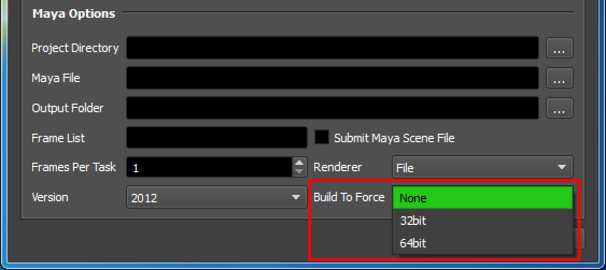

Application Configuration¶
Overview¶
Deadline needs to know the executable file path to your installed application before being able to process jobs across your farm. Many applications ship with a default install path, the binary executable file, path for each operating system, and the version is included in the “Configure Plugins…” dialog. You can access this via Deadline Monitor –> Tools –> Power User Mode –> “Configure Plugins…”.
Below are examples of default application paths for the MayaBatch and Nuke plugins.
Application Paths¶
Looking at the MayaBatch plugin configuration section as an example, there are multiple render executable paths defined.
When a Deadline Worker dequeues (starts) a MayaBatch job, amongst many other functions in the ../<DeadlineRepository>/plugins/MayaBatch/MayaBatch.py plugin file, the Worker attempts to retrieve the bitness build (None, 32bit, 64bit), across all operating systems.
In the example of MayaBatch below we also have separate versions for Maya (2016) and Maya’s Extension (2016_5). Which are defined in the required ../<DeadlineRepository>/plugins/MayaBatch/MayaBatch.param configuration file, as a semicolon separated list:
RenderExecutable2016_0=C:\\Program Files\\Autodesk\\Maya2016\\bin\\MayaBatch.exe;/usr/autodesk/maya2016-x64/bin/maya;/Applications/Autodesk/maya2016/Maya.app/Contents/bin/maya
RenderExecutable2016_5=C:\\Program Files\\Autodesk\\Maya2016.5\\bin\\MayaBatch.exe;/usr/autodesk/maya2016.5-x64/bin/maya;/Applications/Autodesk/maya2016.5/Maya.app/Contents/bin/maya
The MayaBatch.param file settings are stored in the Mongo database and this file serves as the location where the default values are modified and also allow a user interface to be declared per property to provide a more user friendly way to modify these settings for your plugin via “Monitor” -> “Configure Plugins…”. When you save changes to this file programmatically or via the declared UI, this information is then written to the database.
Application Build¶
Typically, there are three functions in our scripting API, which help us identify the correct application executable to return as the “Render Executable” to be used. Depending on which Build option is selected in your in-app or Monitor submission UI (see image above for an example) to be used - None (default), 32bit or 64bit. These functions check the actual bitness of the application binary executable to ensure we use a 32bit or 64bit application if applicable:
- FileUtils. SearchFileList ( string fileList )
Searches a semicolon separated list of files (fileList) for the first one that exists. For relative file paths in the list, the current directory and the PATH environment variable will be searched. Returns the first file that exists, or “” if no file is found.
- FileUtils. SearchFileListFor32Bit ( string fileList )
Searches a semicolon separated list of files (fileList) for the first 32bit file that exists. For relative file paths in the list, the current directory and the PATH environment variable will be searched. Returns the first file that exists, or “” if no file is found.
- FileUtils. SearchFileListFor64Bit ( string fileList )
Searches a semicolon separated list of files (fileList) for the first 64bit file that exists. For relative file paths in the list, the current directory and the PATH environment variable will be searched. Returns the first file that exists, or “” if no file is found.
Network Installed Applications¶
If the application in question supports running across a network, you can add network application install paths to the Plugin Configuration dialog in Monitor as well. Read/Write permissions should be correctly configured for the user account(s) that Deadline Worker runs under, to have the correct access.
Alternatively, you may wish to create desktop shortcuts/symlinks instead, and configure these paths in the Plugin Configuration dialog.
Beyond the scope of this documentation, please note that although many Windows based applications can be installed to a network location, they still require the presence of many c++/c#/.NET re-distribution packages to be installed.
Application Wrapper Scripts¶
Typically, CGI/VFX studios use a bat/cmd/bash/python ‘wrapper’ script which is called to startup an application. This allows the studio to execute other commands, configure environment variables accordingly, before the actual launching of an application such as Maya. As the bat/cmd/bash/python script file is not a binary executable directly, our 2 x functions which check the actual bitness of your script file will cause a failure, which can be skipped by simply ensuring None as the build option is used. This can be better explained by showing a working example if we inspect the actual Python code in the MayaBatch plugin. Note, we NO longer check the bitness on Linux/macOS:
def RenderExecutable(self):
"""Called by Deadline to get the render executable"""
versionString = str(self.Version).replace(".", "_")
mayaExecutable = ""
mayaExeList = self.deadlinePlugin.GetConfigEntry("RenderExecutable" + versionString)
if SystemUtils.IsRunningOnWindows():
if self.Build == "32bit":
self.deadlinePlugin.LogInfo("Enforcing 32 bit build of Maya")
mayaExecutable = FileUtils.SearchFileListFor32Bit(mayaExeList)
if mayaExecutable == "":
self.deadlinePlugin.LogWarning("32 bit Maya " + versionString + " render executable was not found in the semicolon separated list \"" + mayaExeList + "\". Checking for any executable that exists instead.")
elif self.Build == "64bit":
self.deadlinePlugin.LogInfo("Enforcing 64 bit build of Maya")
mayaExecutable = FileUtils.SearchFileListFor64Bit(mayaExeList)
if mayaExecutable == "":
self.deadlinePlugin.LogWarning("64 bit Maya " + versionString + " render executable was not found in the semicolon separated list \"" + mayaExeList + "\". Checking for any executable that exists instead.")
if mayaExecutable == "":
self.deadlinePlugin.LogInfo("Not enforcing a build of Maya")
mayaExecutable = FileUtils.SearchFileList(mayaExeList)
if mayaExecutable == "":
self.deadlinePlugin.FailRender("Maya " + versionString + " render executable was not found in the semicolon separated list \"" + mayaExeList + "\". The path to the render executable can be configured from the Plugin Configuration in the Deadline Monitor.")
return mayaExecutable

{kind=link}
{kind=link}
{kind=link}